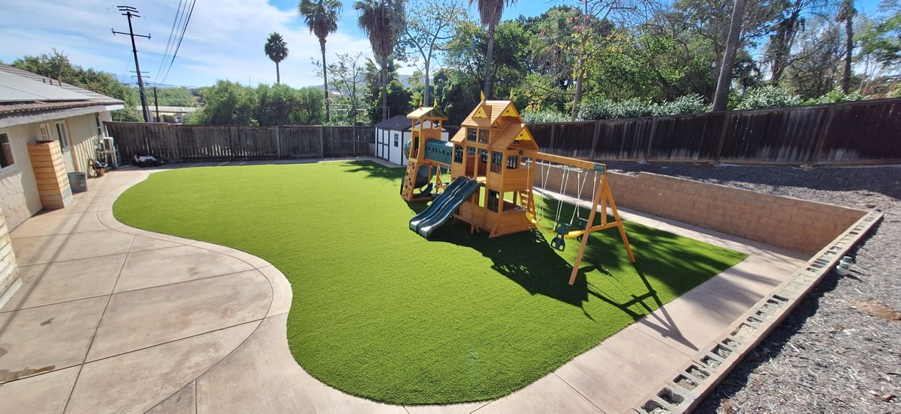

Playground Turf Installation
Safety-rated synthetic turf surfaces for playgrounds, schools, and play areas across Vista and North County San Diego.
Safety-rated synthetic turf surfaces for playgrounds, schools, and play areas across Vista and North County San Diego.

When it comes to playground surfaces, safety is not negotiable. At Tri-City Synthetic Turf, we install playground turf systems that are designed from the ground up to protect children during play. Our installations meet ASTM F1292 standards for impact attenuation and ASTM F1951 standards for ADA wheelchair accessibility, giving parents, schools, and property managers confidence that the surface under their play equipment meets the highest safety benchmarks.
The key to a safe playground surface is what goes underneath the turf. We install engineered shock pad underlayment beneath every playground turf project. This pad absorbs the energy of a fall and reduces the risk of head injury when a child falls from play equipment. The thickness of the shock pad is matched to the critical fall height of your specific equipment, so the protection is calibrated to your playground's needs rather than being a one-size-fits-all solution.
On top of the shock pad, we lay commercial-grade playground turf with dense, cushioned fibers that provide additional comfort and traction. The turf itself is antimicrobial, so the surface stays clean even with dozens of children using it daily. There are no splinters, no exposed hardware, and no loose fill materials like wood chips or rubber mulch that scatter, decompose, or become tripping hazards over time.
ADA accessibility is built into every playground turf installation we do. The smooth, firm surface allows wheelchair access across the entire play area, which is a requirement for public playgrounds and many HOA community spaces. Unlike gravel, sand, or wood chip surfaces, turf provides a consistent, level surface that meets ADA guidelines without requiring ongoing maintenance to keep it compliant.
Playground turf also performs in all weather conditions. Rain drains through the surface quickly, so there is no standing water or muddy patches after a storm. The turf dries fast and is ready for play within minutes. In San Diego's sunny climate, we can also recommend products with cooling technology that reduce surface temperature on hot days, keeping the playground comfortable year-round.
We install playground turf for homeowners with backyard play areas, HOA communities, schools, daycare centers, churches, and parks throughout Vista, Oceanside, Carlsbad, San Marcos, Escondido, Encinitas, and all of North County San Diego. Every project includes a detailed safety assessment, proper shock pad specification, and professional installation by our own crew. Call (760) 681-3517 for a free estimate and safety consultation.
Meets ASTM F1292 impact attenuation standards. Shock pad underlayment is matched to your equipment's critical fall height for verified protection.
Smooth, firm surface meets ASTM F1951 accessibility standards. Wheelchair-friendly across the entire play area without ongoing maintenance.
Built-in antimicrobial properties keep the surface hygienic even with heavy daily use by children. No chemical treatments required.
Unlike wood chip or rubber mulch surfaces, turf has no loose fill, no exposed edges, and no materials that can cause splinters or scrapes.
Fast drainage means no standing water after rain. The surface dries quickly so the playground is ready for use within minutes of a storm.
No replenishing loose fill, no raking, no leveling. Just occasional brushing and rinsing to keep the surface clean and looking great.
Every playground installation starts with safety and ends with certification.
We evaluate your playground equipment, measure critical fall heights, and assess site conditions. You receive a detailed plan with shock pad specifications and a transparent estimate.
We prepare the subbase for proper drainage, then install engineered shock pad underlayment matched to your equipment's fall height requirements. This is the foundation of the safety system.
Commercial-grade playground turf is laid over the shock pad, cut to precise dimensions, and secured. Seams are tight, edges are finished, and antimicrobial infill is applied.
We do a final walkthrough, verify all safety specifications, and provide documentation for ASTM compliance. Your playground is ready for use the same day.
Our playground turf systems are designed to meet ASTM F1292 standards for impact attenuation and ASTM F1951 for ADA accessibility. The combination of turf and shock pad underlayment provides fall protection rated for equipment heights specified by your playground design. We can provide documentation for permitting and inspection purposes.
Fall height ratings depend on the thickness of the shock pad installed beneath the turf. Standard configurations provide fall protection for equipment heights of 6 to 10 feet. We evaluate your specific playground equipment and recommend the appropriate shock pad thickness to meet the required critical fall height rating.
Playground turf requires minimal maintenance. Regular debris removal, occasional rinsing, and periodic brushing to keep fibers upright is all that is needed. The antimicrobial infill helps control bacteria without any chemical treatments. We recommend a brief visual inspection monthly to check for any wear or damage around high-traffic areas.
Yes. Playground turf that meets ASTM safety standards is widely accepted by HOAs, schools, parks departments, and municipal building codes. We provide all necessary safety documentation and testing certifications to support your approval process. Many cities in San Diego County actively encourage synthetic surfaces for public play areas.

Durable, antimicrobial turf designed for dogs and pets. No mud, no brown spots.

Complete turf solutions for any residential or commercial property in North County.

Professional turf solutions for businesses, HOAs, schools, and commercial properties.